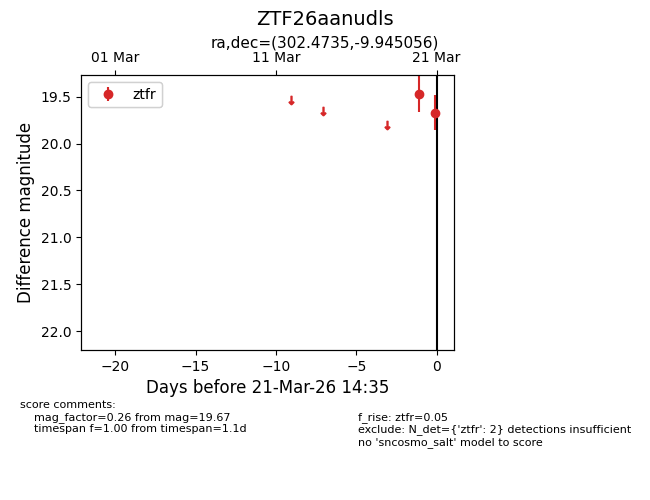
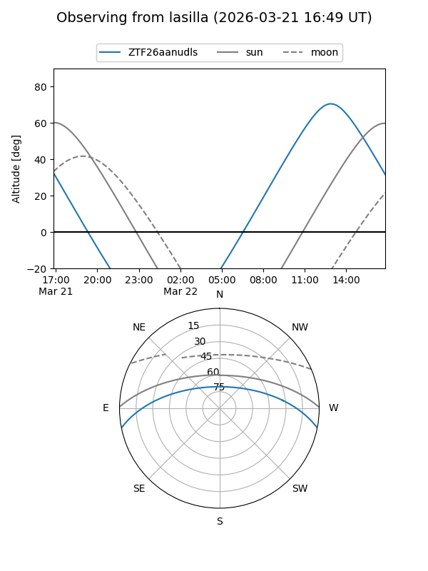
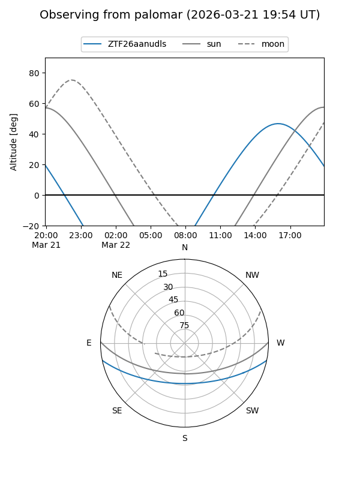
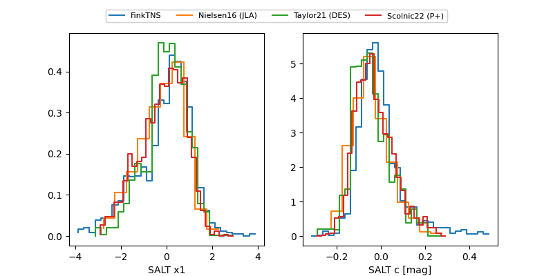

ZTF26aanudls
Target ZTF26aanudls at 2026-03-21 14:37
Aliases and brokers:
FINK: link
Lasair: link
ALeRCE: link
alt names
ZTF26aanudls (ztf,fink_ztf)
Coordinates:
equatorial (ra, dec) = 302.4735,-9.94506
equatorial (HMS+DMS) = 20:09:53.65,-09:56:42.20
galactic (l, b) = (32.7505,-21.90165)
Flags:
Photometry:
last ztfr=19.67
2 ztfr detections
Lightcurve

Visibility


Additional plots
